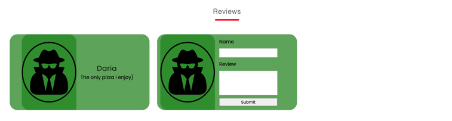
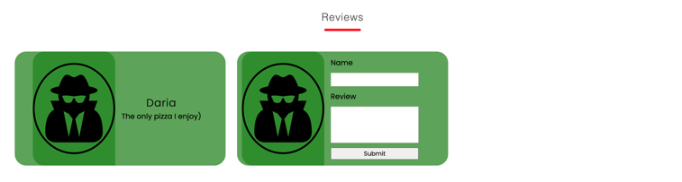

This project was a "end of the orientation phase" showcase of the information we had learned thus far - from using wireframes, how user data works and is being stored, research docuemntations on personally chosen topics, using Arduino Rich Shields, learning basic JavaScript to building websites on our own - and all of that we adjusted in a single project. For me adjusting to this variety of content was no easy task mainly because I had never been relient on such frequent feedback before. Adjusting to this regime took a long time but I was learning and all of my progress thoughout week 1 - 7 is docuemnted in the MyPEP.docx file. The conclusion I had drawn after this period of time was that teamowrk was all about overcomming communicational problems and looking out for each other as I was in a group in which communication was of the most value.
After assigning roles we had an assignment to interview people on their oppinions about our pitch and that is what came from the transcripts I did

Me and another person were working on the layout of the project - first sketching then styling
Because I was in a really technically advanced team I got to work on the layout of the website with some basic html/css, while the others were working on their parts.
 

Overall I managed my way though this phase of 10 weeks. I tried to communicate with teachers for the most part and due to anxiety I would always assure them that though I was not ready to show them anything I was working. A problem that was to come. With my deteriating mental health I wasn't the best team member to have. Though I was working on my part and was getting recognition for my work I felt like it wasn't enough. Of course its not only bad things that happened. I had an oportunity like no other to try a great ammount of things which I mentioned upwards me and my group included in our final project.
Always Work In Progress / Martin Petkov